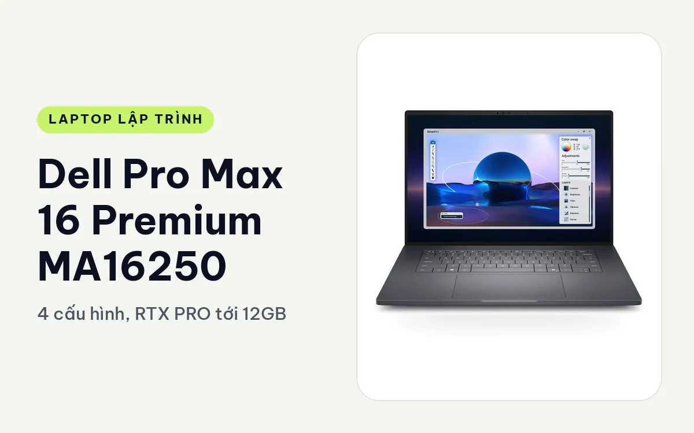
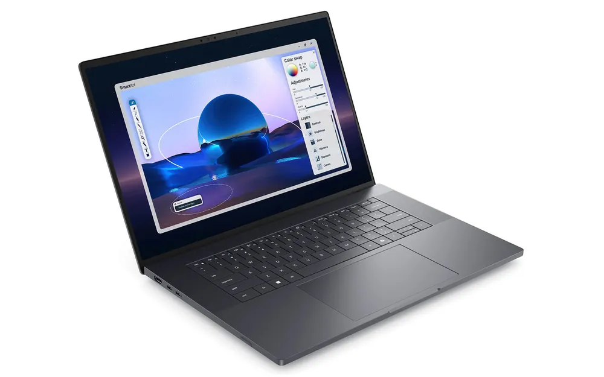
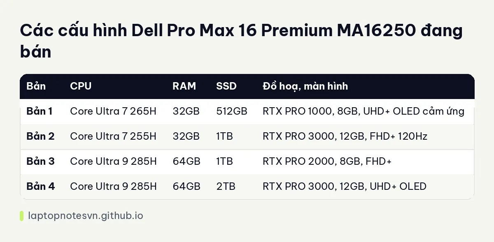

Dell Pro Max 16 Premium MA16250 cho lập trình - 4 cấu hình, RTX PRO tới 12GB

Dell Pro Max 16 Premium MA16250 là máy trạm 16 inch cao cấp của Dell, có 4 cấu hình và đi từ RTX PRO 1000 đến RTX PRO 3000 12GB. Máy có màn OLED UHD+ cảm ứng ở hai bản và pin 96Wh dùng khoảng 8 đến 10 giờ.
Máy hợp dev AI, data, đồ hoạ 3D và những ai cần cấu hình nặng nhưng vẫn muốn di chuyển giữa văn phòng và nhà, miễn là chấp nhận cân nặng trên 2kg.
Thiết kế, nhiều cổng và có RAID
Kích thước máy 353.8 x 240,28mm, nặng 2,19kg. Dell trang bị Thunderbolt 4 và Thunderbolt 5 với băng thông 120Gbps, cùng HDMI 2.1, USB-A và RJ45. Có đủ cổng cho bàn làm việc mà gần như không cần hub.
Chi tiết đáng nói cho dân kỹ thuật là máy hỗ trợ RAID 0 và RAID 1, ổ SSD tối đa 4TB. RAID 0 tăng tốc đọc ghi cho dataset, RAID 1 sao lưu theo thời gian thực. Mô tả sản phẩm không nói RAM có hàn hay không, nên nếu cần nâng RAM về sau, hãy hỏi cửa hàng trước khi mua.
Với dev, khả năng cắm nhiều thứ cùng lúc là lợi thế thực tế: màn hình ngoài qua HDMI hoặc Thunderbolt, mạng dây qua RJ45 khi kéo image lớn, ổ nhanh qua cổng 120Gbps. Chất liệu vỏ và bàn phím không được trang sản phẩm nêu chi tiết, nên bài này không đoán.
Mang đi hằng ngày
Pin 96Wh với thời lượng khoảng 8 đến 10 giờ cho việc nhẹ. So với 6 đến 9 giờ của Dell Pro Max 16 MC16250, nhánh Premium dùng lâu hơn một chút, dù cùng 96Wh. Khi chạy card RTX PRO tải nặng, thời lượng giảm rõ, nên củ sạc luôn cần có trong balo.

Với 2,19kg, máy không thuộc nhóm đi cả ngày dưới vai, nhưng vẫn ổn khi chuyển giữa các điểm làm việc có ổ cắm.
Có 4 cấu hình
Bốn bản trải ra theo ba mức card, nên đây là dòng dễ chọn đúng nhất theo công việc.

| Bản | CPU | RAM | SSD | Đồ hoạ, màn hình |
|---|---|---|---|---|
| Bản 1 | Core Ultra 7 265H | 32GB | 512GB | RTX PRO 1000, 8GB, UHD+ OLED cảm ứng |
| Bản 2 | Core Ultra 7 255H | 32GB | 1TB | RTX PRO 3000, 12GB, FHD+ 120Hz |
| Bản 3 | Core Ultra 9 285H | 64GB | 1TB | RTX PRO 2000, 8GB, FHD+ |
| Bản 4 | Core Ultra 9 285H | 64GB | 2TB | RTX PRO 3000, 12GB, UHD+ OLED |
Bản 1, Core Ultra 7 265H / 32GB / 512GB, RTX PRO 1000, màn UHD+ OLED cảm ứng
Bản này ưu tiên màn hình hơn card. 32GB RAM đủ cho Docker, máy ảo và IDE, còn RTX PRO 1000 8GB đủ cho CUDA cơ bản. Hợp dev web, mobile, UI cần màn hình chuẩn đẹp để xem giao diện, kèm việc học máy nhẹ. Ổ 512GB hơi nhỏ, nên cân nhắc nâng hoặc dùng ổ ngoài.
Bản 2, Core Ultra 7 255H / 32GB / 1TB, RTX PRO 3000, màn FHD+ 120Hz
Bản này dồn vào card: RTX PRO 3000 có 12GB VRAM, lớn hơn các bản khác và hợp thử mô hình cỡ vừa, render 3D hoặc mô phỏng. Nếu bạn làm AI cục bộ mà RAM 32GB còn đủ thì đây là lựa chọn hợp lý nhất về VRAM. Màn FHD+ 120Hz có tần số quét cao nên cuộn code và kéo timeline dễ chịu hơn, nhưng độ phân giải không cao.
Bản 3, Core Ultra 9 285H / 64GB / 1TB, RTX PRO 2000
Bản dành cho dev nặng về CPU và RAM hơn là VRAM: build lớn, nhiều máy ảo, cơ sở dữ liệu cục bộ, dữ liệu phân tích. RTX PRO 2000 8GB đủ cho CUDA ở mức vừa. Màn FHD+ cơ bản, hợp ai muốn ổn định hơn là đẹp. Nhu cầu RAM 64GB là khi bạn chạy rất nhiều thứ cùng lúc, tham khảo thêm ở bài lập trình viên cần bao nhiêu RAM.
Bản 4, Core Ultra 9 285H / 64GB / 2TB, RTX PRO 3000, màn UHD+ OLED
Đây là bản đầy đủ nhất, gom chip mạnh nhất, 64GB RAM, ổ 2TB, 12GB VRAM và màn OLED UHD+. Dành cho dev AI, data, đồ hoạ hoặc ai cần một máy làm trọn việc không phải nâng gì thêm. Điểm yếu duy nhất nằm ở cân nặng và nhu cầu sạc khi chạy tải dài.
Điểm chung của cả bốn bản là chip dòng H, thân máy lớn và pin 96Wh. Chính vì vậy, khi so bản với nhau, hãy tập trung vào ba thứ: VRAM của card, dung lượng RAM và loại màn hình. Những thứ còn lại gần như không đổi.
Nên chọn bản nào
Dev web hoặc mobile cần màn đẹp thì chọn bản 1. Làm AI cần nhiều VRAM thì bản 2. Cần CPU và RAM cho build, máy ảo thì bản 3. Gom hết cho đồ hoạ lẫn AI thì bản 4.
Nếu tìm máy 14 inch nhẹ hơn, hãy xem Dell Pro Max 14 Premium, chỉ có tới RTX PRO 2000 nhưng nặng 1,61kg. Còn nhánh MC 16 inch thì thấp hơn về card, tối đa RTX PRO 2000.
Đăng ngày 08/11/2026